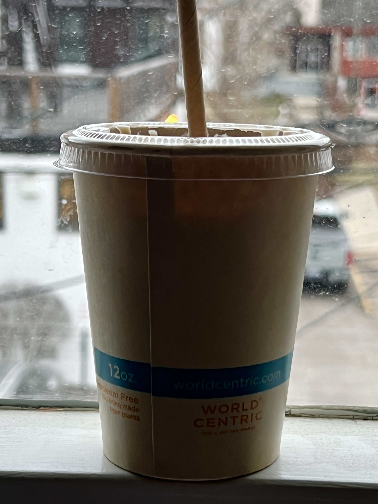
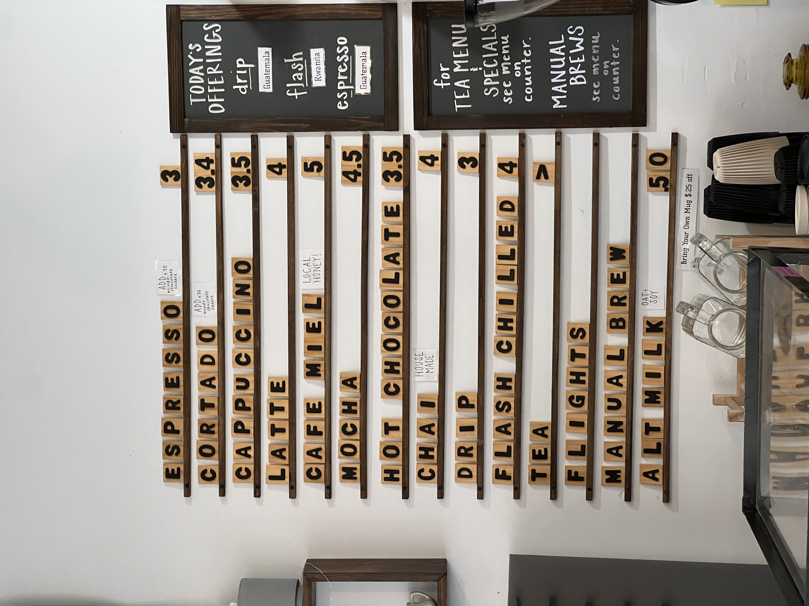
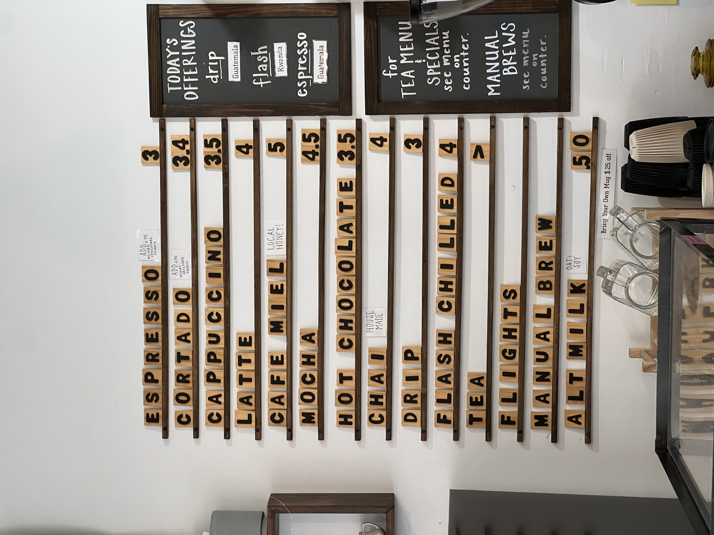

My final stop was at Vertex Coffee located on the corner of S University and Washtenaw. This shop was unique from the others in that they use all compostable items, even for their retail products. Additionally, all of their syrups and chai are made in-house. They have the option to order online which I appreciated if I'm ever in a rush
I ordered an iced chai tea latte with oatmilk, but I did not find it sweet enough for my liking. My drink was $4.50 which is comparable to other chains, like Starbucks. They had ample space for seating, making it a very good study spot for college students. Overall, I gave Vertex a medicore rating due to the taste of my drink in comparison to the other places that I tried. I would not be opposed to giving it another chance and using it as a place to study or meet up with a friend.
"Clean, hip space with friendly baristas and just the right buzz that makes it perfect to meet a friend or get some work done" REVIEW FROM CUSTOMER
 
